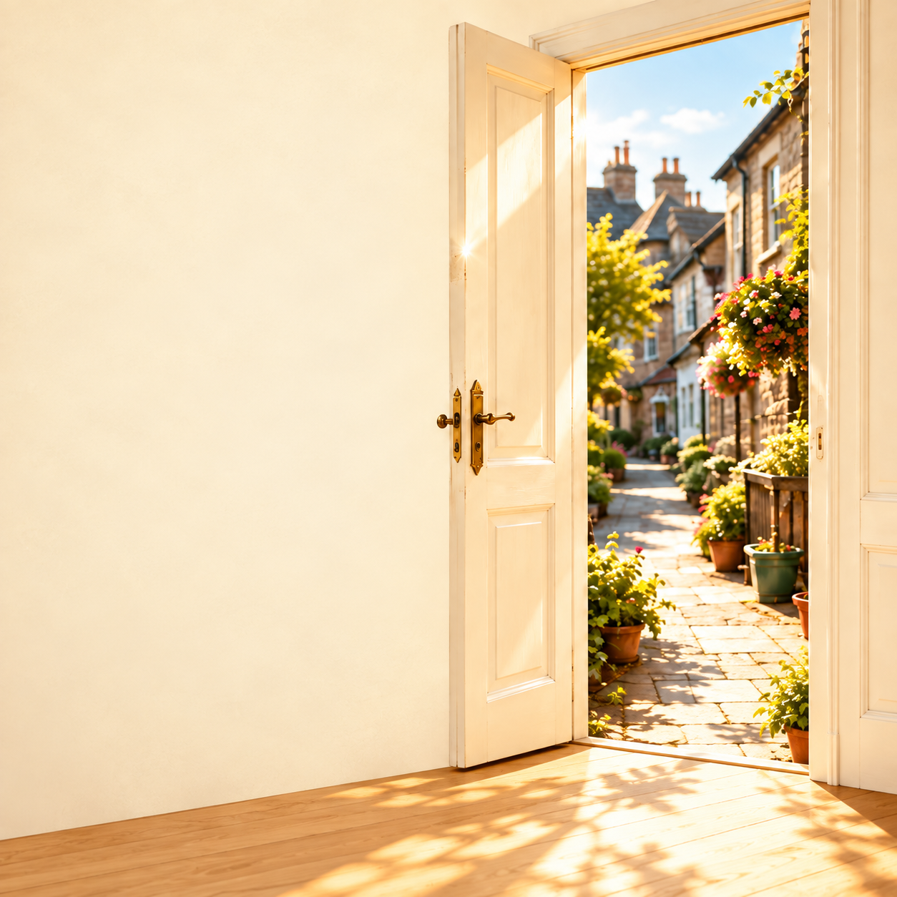

A place for real life
Another possibility, close to home
Sometimes the first step is simply finding a place where you can speak with someone.
A familiar place
A local Service Point makes that conversation easier to begin. You can meet a volunteer in St Austell, ask how the credit union works, and find out where to go from there.
The human first step
You can arrive with a question, an idea, or something you are trying to manage. A conversation can help you understand your next step.
A local place makes an alternative visible.
Local volunteers are working to make the route to Kernow Credit Union easy to find in St Austell.
